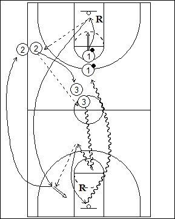

Catégorie : SHOOTS (Sh-018)
Déroulement
- Les joueurs sont sur trois files : une avec ballons à une ligne des lancers-francs, une le long d’une sideline à hauteur de cette ligne des lancers-francs et une dans le cercle central du côté de la zone arrière.
- Le premier joueur de la file 1 shoote un lancer-franc, réalise le rebond et effectue la première passe (remise en jeu de la baseline si le lancer est réussi) vers le premier joueur de la file 2, qui prolonge vers le premier joueur de la file 3. Tandis que celui-ci dribble vers le panneau opposé, le premier joueur de la file 1 sprinte vers le côté opposé également pour effectuer un jump shoot.
- Après son shoot, 1 va en 2. 2 va en 3. 3 réalise le deuxième rebond et va en 1 avec le ballon.
Coaching points
- Vitesse d’exécution pour les deux premières passes de contre-attaque.
- Si 3 arrive avant 1, il réalise le back dribble avant la passe pour le jump shoot.